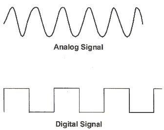
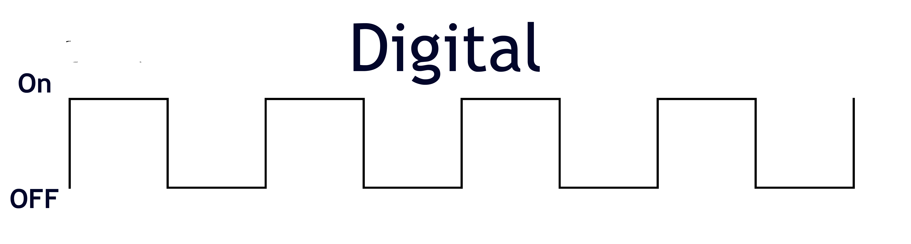
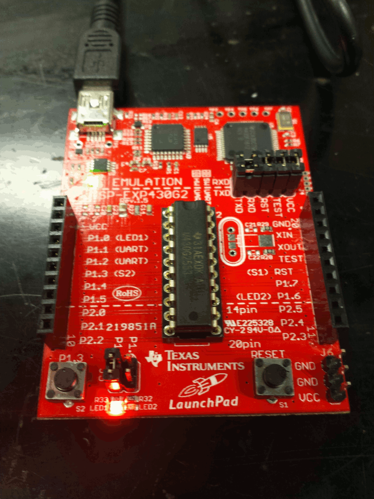
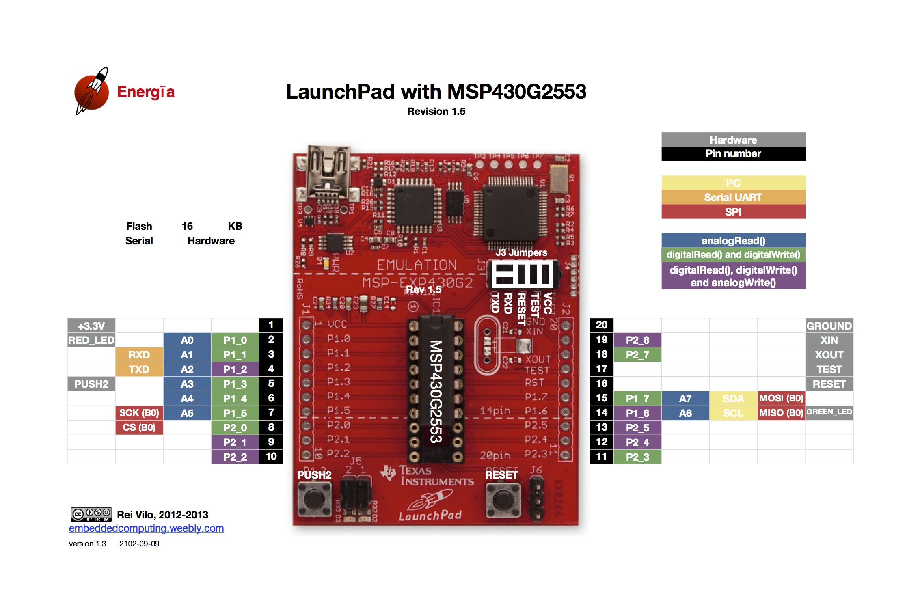
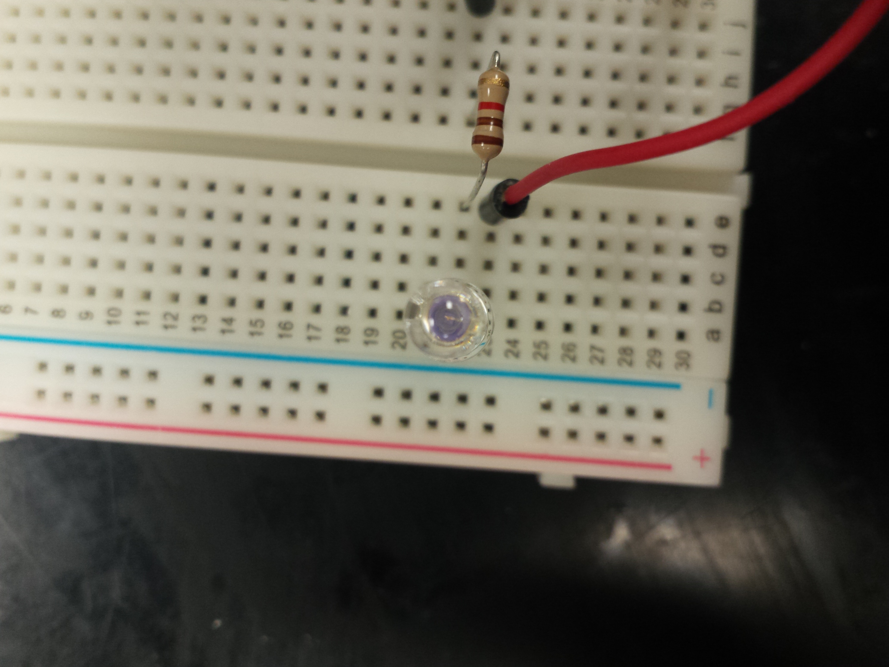
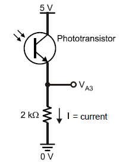

COLL 142 - Week 08
Hardware Input
Salvatore "Sal" Testa /@saltesta14
What are the types of inputs?
Digital and Analog
(for our purposes)
Is digital fun?
Yes!
Digital Output Reminder
Digital Input Example
int buttonPin = P1_3; // builtin button
int ledPin = P1_6; // builtin light
int buttonState = 0;
void setup() {
pinMode(ledPin, OUTPUT);
pinMode(buttonPin, INPUT_PULLUP); // input pin <-> ground
}
void loop(){
buttonState = digitalRead(buttonPin); // read the button
if (buttonState == HIGH) { // if the button is up
digitalWrite(ledPin, HIGH);
} else {
digitalWrite(ledPin, LOW);
}
}
Is analog cool too?
Yes, of course!

Demo
int PHOTO_RESISTOR = A7;
void setup()
{
Serial.begin(9600);
pinMode(PHOTO_RESISTOR, INPUT);
}
void loop()
{
Serial.println(analogRead(PHOTO_RESISTOR));
delay(500);
}
Analog Pins
Are those LEDs made of magic?
Yes*
*No
Schematic
How can this be useful?
Logic with infrared
int PHOTO_RESISTOR = A7;
int LED = P1_6;
int THRESHOLD = 1;
int sensorReading = 0;
void setup()
{
pinMode(PHOTO_RESISTOR, INPUT);
pinMode(LED, OUTPUT);
}
void loop()
{
sensorReading = analogRead(PHOTO_RESISTOR);
if(sensorReading > THRESHOLD) {
digitalWrite(LED, HIGH);
} else {
digitalWrite(LED, LOW);
}
}
What are we doing this week?
Traffic Light
Make your traffic light change if the infrared sensor is tripped.